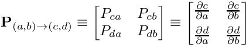
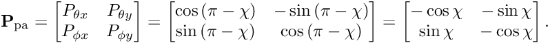
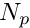

Table of Contents
Coordinate systems
There are three coordinate systems in use throughout VCSBeam:
- Instrumental ( , )
- Local sky coordinates (
 ,
,  )
) - Celestial sky coordinates (
 ,
,  ) They are illustrated in the following figure:
) They are illustrated in the following figure:

Instrumental coordinates
This is a Cartesian coordinate system aligned with local (ground) compass directions. Positive points towards local North, and positive towards local East. The polarisation refers to the physical set of dipoles parallel to the N-S line; the polarisation, to the E-W line.
Local sky coordinates
This is a spherical coordinate system defined with respect to a local observer. is the zenith angle, i.e. a \textit{colatitude}, with zenith itself therefore defined as and the horizon as . is the azimuth, and we define in the North direction, with positive azimuth moving clockwise as viewed from above (i.e. N→E→S→W→N). Moreover, the elevation is denoted by the symbol , and is related to the zenith angle by
Celestial sky coordinates
This is a spherical coordinate system defined with respect to the celestial sphere. is the declination (Dec) and is the right ascension (RA).
Coordinate transformations
All coordinate transformations can be effected by applying the appropriate Jacobian matrix for the desired transformation. In this documentation, a boldface will always be used to denote transformation matrices. For general coordinates and  ,
,

Among these, the only transformation that is explicitly used in VCSBeam is the transformation between local sky coordinates and celestial sky coordinates, which is a single rotation within the sky plane by the parallactic angle.
Parallactic angle correction
The parallactic angle correction is a transformation between local sky coordinates and celestial sky coordinates. The parallactic angle itself, , is defined as the position angle of local zenith with respect to the North Celestial Pole as subtended at a given source, illustrated in the following figure.

The transformation  is therefore a counterclockwise rotation by . (A counterclockwise rotation of a given vector is equivalent to a clockwise rotation of the coordinate axes.) This is the rotation
is therefore a counterclockwise rotation by . (A counterclockwise rotation of a given vector is equivalent to a clockwise rotation of the coordinate axes.) This is the rotation

In VCSBeam, the parallactic angle is calculated (via the function palPa) in the Starlink/pal library by the spherical triangle identity
where is the latitude of the observer, is the hour angle of the source, and is the declination. The latitude of the MWA is rad, defined in the mwalib library.
Comparison of notation in other documents
Coordinate systems
| Document | ||||||
|---|---|---|---|---|---|---|
| This document | | | | | ||
| MWA metafits files | Y | X | - | - | - | - |
Jones matrices
| Document | |||
|---|---|---|---|
| This document |  |  |  |
| Sokolowski et al., (2017) | |  |  |
| Ord et al., (2019) | | | |